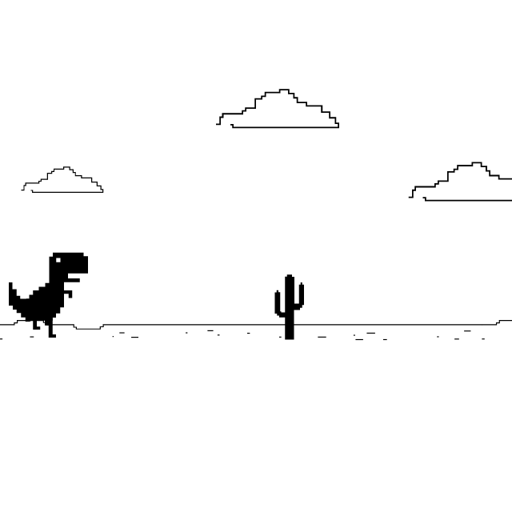

<div class="bootstrap-wrapper">
  <div class="container error">
    <mat-card class="mt20">
      
      <div class="container text-center">
        <button
          *ngIf="loginService.isLoggedIn() && userRole === 'USER'"
          mat-icon-button
          color="primary"
          routerLink="/user-dashboard"
        >
          <mat-icon mat-list-icon>home</mat-icon> Inicio
        </button>
        <button
          *ngIf="loginService.isLoggedIn() && userRole === 'ADMIN'"
          mat-icon-button
          color="primary"
          routerLink="/admin"
        >
          <mat-icon mat-list-icon>home</mat-icon> Inicio
        </button>
        <button
          *ngIf="!loginService.isLoggedIn()"
          mat-icon-button
          color="primary"
          [routerLink]="'/login'"
        >
          <mat-icon mat-list-icon>home</mat-icon> Login
        </button>
      </div>
    </mat-card>
  </div>
</div>
